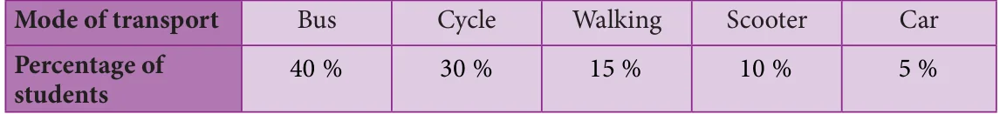
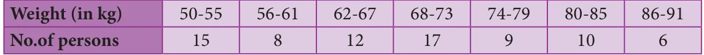
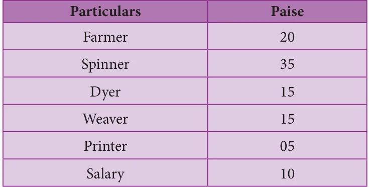

<!DOCTYPE html>
<html lang="en">
<head>
<meta charset="UTF-8">
<meta name="viewport" content="width=device-width,initial-scale=1">
<title>Exercise 6.3 — Statistics</title>
<meta name="description" content="Class 8 Mathematics · Statistics · Exercise 6.3">
<link rel="icon" href="data:image/svg+xml,<svg xmlns='http://www.w3.org/2000/svg' viewBox='0 0 100 100'><text y='.9em' font-size='90'>📘</text></svg>">
<link rel="stylesheet" href="../../../assets/book.css">
<link rel="stylesheet" href="https://cdn.jsdelivr.net/npm/katex@0.16.11/dist/katex.min.css" crossorigin="anonymous">
</head>
<body>
<header class="topbar">
<div class="topbar-in">
  <div class="crumb">
    <span class="c1"><a href="../../../index.html">Library</a> · <a href="../../index.html">Class 8 Mathematics</a></span>
    <span class="c2">Statistics · Exercise 6.3</span>
  </div>
  <a class="tb-btn" data-nav="prev" href="../../06-statistics/06-exercise-6.2/index.html" title="Exercise 6.2">←</a>
  <details class="drawer"><summary class="tb-btn" title="Sections in this chapter">☰</summary>
<div class="drawer-panel"><div class="dh">Statistics</div><a href="../01-introduction-6.1/index.html">6.1 Introduction</a><a href="../02-frequency-distribution-table-6.2/index.html">6.2 Frequency Distribution Table</a><a href="../03-graphical-representation-of-the-frequency-distribution-for-6.3/index.html">6.3 Graphical Representation of the Frequency Distribution for Ungrouped Data</a><a href="../04-exercise-6.1/index.html">Exercise 6.1</a><a href="../05-graphical-representation-of-the-frequency-distribution-for-6.4/index.html">6.4 Graphical Representation of the Frequency Distribution for Grouped Data</a><a href="../06-exercise-6.2/index.html">Exercise 6.2</a><a href="../07-exercise-6.3/index.html" aria-current="page">Exercise 6.3</a><a href="../08-summary/index.html">SUMMARY</a></div></details>
  <a class="tb-btn" data-nav="next" href="../../06-statistics/08-summary/index.html" title="SUMMARY">→</a>
  <button class="tb-btn" data-theme-toggle title="Toggle light / dark" aria-label="Toggle light or dark theme">◐</button>
</div>
<div class="progress"><span style="width:84.3%"></span></div>
</header>
<main class="wrap">
<div class="sec-head">
  <p class="eyebrow"><a href="../index.html">Chapter 6 · Statistics</a></p>
  <h1>Exercise 6.3</h1>
  <p class="sec-meta">Textbook pages 19–20 · 7 figures</p>
</div>
<article class="prose">
<p>Miscellaneous Practice ProblemsMiscellaneous Practice Problems</p>
<ul class="qlist">
<li><span class="mk">1.</span><span class="lt">Draw a pie chart for the given table.</span></li>
</ul>
<figure class="fig table-fig wide"></figure>
<ul class="qlist">
<li><span class="mk">2.</span><span class="lt">The data on modes of transport used by the students to come to school are given below.</span></li>
</ul>
<p>Draw a pie chart for the data.</p>
<figure class="fig table-fig wide"></figure>
<ul class="qlist">
<li><span class="mk">3.</span><span class="lt">Draw a histogram for the given frequency distribution.</span></li>
</ul>
<figure class="fig wide"></figure>
<ul class="qlist">
<li><span class="mk">4.</span><span class="lt">Draw a histogram and the frequency polygon in the same diagram to represent the</span></li>
</ul>
<p>following data.</p>
<figure class="fig wide"></figure>
<p>Challenging problemsChallenging problems</p>
<ul class="qlist">
<li><span class="mk">5.</span><span class="lt">Form a continuous frequency distribution table and draw histogram from the following data.</span></li>
</ul>
<figure class="fig table-fig"></figure>
<ul class="qlist">
<li><span class="mk">6.</span><span class="lt">A rupee spent in a cloth manufacturing company is distributed as follows. Represent this in</span></li>
</ul>
<p>a pie chart.</p>
<figure class="fig table-fig"></figure>
<ul class="qlist">
<li><span class="mk">7.</span><span class="lt">Draw a histogram for the following data.</span></li>
</ul>
<figure class="fig wide"></figure>
</article>
<nav class="pager"><a class="" data-nav="prev" href="../../06-statistics/06-exercise-6.2/index.html"><span class="dir">← Previous</span><span class="t">Exercise 6.2</span><span class="ch">Statistics</span></a><a class="nx" data-nav="next" href="../../06-statistics/08-summary/index.html"><span class="dir">Next →</span><span class="t">SUMMARY</span><span class="ch">Statistics</span></a></nav>
</main><footer class="site">Generated from the source textbook PDFs · text, figures and exercises belong to their respective publishers.</footer><script defer src="https://cdn.jsdelivr.net/npm/katex@0.16.11/dist/katex.min.js" crossorigin="anonymous"></script>
<script defer src="https://cdn.jsdelivr.net/npm/katex@0.16.11/dist/contrib/auto-render.min.js" crossorigin="anonymous"
  onload="renderMathInElement(document.body,{delimiters:[
    {left:'\\(',right:'\\)',display:false},
    {left:'$$',right:'$$',display:true},
    {left:'\\[',right:'\\]',display:true}],throwOnError:false,ignoredTags:['script','noscript','style','textarea','pre','code']})"></script>
<script src="../../../assets/book.js"></script>
<script defer src="../../../../assets/search.js"></script>
</body>
</html>
